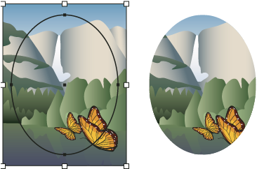

About clipping masks
A clipping mask is an object whose shape masks other artwork so that only areas that lie within the shape are visible—in effect, clipping the artwork to the shape of the mask. The clipping mask and the objects that are masked are called a clipping set and are marked with a dotted line in the Layers panel. You can make a clipping set from a selection of two or more objects or from all objects in a group or layer.
For a video on using Pathfinder effects and clipping masks and how to import clipping masks into Flash, see www.adobe.com/go/vid0057.

The following guidelines apply to creating clipping masks:
-
The objects that you mask are moved into the clipping mask’s group in the Layers panel if they don’t already reside there.
-
Only vector objects can be clipping masks; however, any artwork can be masked.
-
If you use a layer or group to create a clipping mask, the first object in the layer or group masks everything that is a subset of the layer or group.
-
Regardless of its previous attributes, a clipping mask changes to an object with no fill or stroke.
 To create
a semitransparent mask, use the Transparency panel to create an opacity
mask.
To create
a semitransparent mask, use the Transparency panel to create an opacity
mask.
For more information on using masks and transparency, see www.adobe.com/go/learn_ai_tutorials_mask.